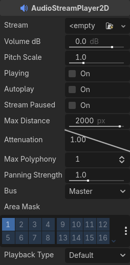
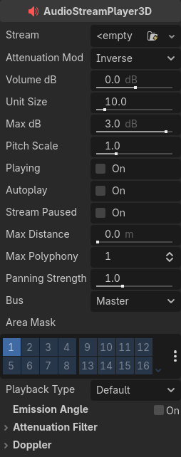
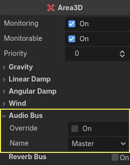

Đang cập nhật
Nội dung trang này chưa được cập nhật cho Godot
4.7
và có thể đã lỗi thời. Nếu bạn biết cách cải thiện trang này hoặc xác nhận
được rằng nó vẫn đúng, hãy gửi một pull request (bản tiếng Anh).
Audio stream
Giới thiệu
Như bạn có thể đã đọc trong Audio bus, âm thanh được gửi tới từng bus thông qua một node AudioStreamPlayer. Có nhiều loại AudioStreamPlayer khác nhau. Mỗi loại tải một AudioStream và phát nó.
AudioStream
Audio stream là một đối tượng trừu tượng phát ra âm thanh. Âm thanh có thể đến từ nhiều nơi, nhưng phổ biến nhất là được tải từ hệ thống tệp. Các tệp âm thanh có thể được tải dưới dạng AudioStream và đặt vào trong một AudioStreamPlayer. Bạn có thể tìm thông tin về các định dạng được hỗ trợ và sự khác biệt giữa chúng trong Import mẫu âm thanh.
Có những loại AudioStream khác, chẳng hạn AudioStreamRandomizer. Loại này chọn một audio stream khác nhau từ một danh sách stream mỗi lần được phát, và áp dụng thay đổi cao độ và âm lượng ngẫu nhiên. Điều này có thể hữu ích để tạo sự đa dạng cho những âm thanh được phát thường xuyên.
AudioStreamPlayer

Đây là stream player tiêu chuẩn, không có vị trí. Nó có thể phát tới bất kỳ bus nào. Trong các hệ thống âm thanh 5.1, nó có thể gửi âm thanh tới bản mix stereo hoặc các loa phía trước.
Playback Type là một cài đặt thử nghiệm và có thể thay đổi trong các phiên bản Godot tương lai. Nó tồn tại để các bản xuất Web dùng sample dựa trên Web Audio API thay vì stream toàn bộ âm thanh tới trình duyệt, khác với hầu hết các nền tảng. Điều này ngăn âm thanh bị méo trong các bản xuất Web đơn luồng. Theo mặc định, chỉ nền tảng Web mới dùng sample. Không nên thay đổi cài đặt này trừ khi bạn có lý do rõ ràng. Bạn có thể thay đổi kiểu phát mặc định cho web và các nền tảng khác trong cài đặt dự án tại Audio > General (cần bật cài đặt nâng cao để thấy cài đặt này).
AudioStreamPlayer2D

Đây là một biến thể của AudioStreamPlayer, nhưng phát âm thanh trong môi trường có vị trí 2D. Khi ở gần bên trái màn hình, âm thanh sẽ lệch sang trái. Khi ở gần bên phải, âm thanh sẽ lệch sang phải.
Ghi chú
Area2D có thể được dùng để chuyển hướng âm thanh từ bất kỳ AudioStreamPlayer2D nào mà chúng chứa tới các bus cụ thể. Điều này giúp tạo ra các bus với reverb hoặc chất lượng âm thanh khác nhau để xử lý hành động diễn ra ở những khu vực cụ thể trong thế giới game của bạn.

AudioStreamPlayer3D

Đây là một biến thể của AudioStreamPlayer, nhưng phát âm thanh trong môi trường có vị trí 3D. Tùy vào vị trí của player so với màn hình, nó có thể định vị âm thanh ở dạng stereo, 5.1 hoặc 7.1 tùy theo thiết lập âm thanh được chọn.
Tương tự AudioStreamPlayer2D, một Area3D có thể chuyển hướng âm thanh tới một audio bus.

Khác với bản 2D, phiên bản 3D của AudioStreamPlayer có thêm một vài tùy chọn nâng cao:
Reverb bus
Cảnh báo
Tính năng này không được hỗ trợ trên nền tảng web nếu chế độ phát của AudioStreamPlayer được đặt thành Sample, vốn là giá trị mặc định. Nó chỉ hoạt động nếu chế độ phát được đặt thành Stream, đổi lại độ trễ sẽ tăng nếu không bật luồng (thread).
Xem Phát âm thanh trong tài liệu Xuất cho Web để biết chi tiết.
Godot cho phép các audio stream 3D đi vào một node Area3D cụ thể gửi âm thanh dry và wet tới các bus riêng biệt. Điều này hữu ích khi bạn có nhiều cấu hình reverb cho các loại phòng khác nhau. Để làm điều này, hãy bật loại reverb này trong mục Reverb Bus của các thuộc tính Area3D:

Đồng thời, một bố cục bus đặc biệt được tạo ra, trong đó mỗi Area3D nhận thông tin reverb từ từng Area3D. Cần tạo và cấu hình một hiệu ứng Reverb trong mỗi reverb bus để hoàn tất thiết lập cho hiệu ứng mong muốn:

Mục Reverb Bus của Area3D cũng có một tham số tên là Uniformity. Một số loại phòng dội âm nhiều hơn những loại khác (như nhà kho), nên tiếng vang có thể được nghe gần như đồng đều khắp phòng dù nguồn âm ở xa. Thử nghiệm với tham số này có thể mô phỏng hiệu ứng đó.
Doppler
Cảnh báo
Tính năng này không được hỗ trợ trên nền tảng web nếu chế độ phát của AudioStreamPlayer được đặt thành Sample, vốn là giá trị mặc định. Nó chỉ hoạt động nếu chế độ phát được đặt thành Stream, đổi lại độ trễ sẽ tăng nếu không bật luồng (thread).
Xem Phát âm thanh trong tài liệu Xuất cho Web để biết chi tiết.
Khi vận tốc tương đối giữa nguồn phát và người nghe thay đổi, điều này được cảm nhận như sự tăng hoặc giảm cao độ của âm thanh phát ra. Godot có thể theo dõi thay đổi vận tốc trong các node AudioStreamPlayer3D và Camera. Cả hai node đều có thuộc tính này, cần được bật thủ công:

Hãy bật nó bằng cách đặt giá trị tùy theo cách các đối tượng sẽ di chuyển: dùng Idle cho các đối tượng di chuyển bằng _process, hoặc Physics cho các đối tượng di chuyển bằng _physics_process. Việc theo dõi sẽ diễn ra tự động.